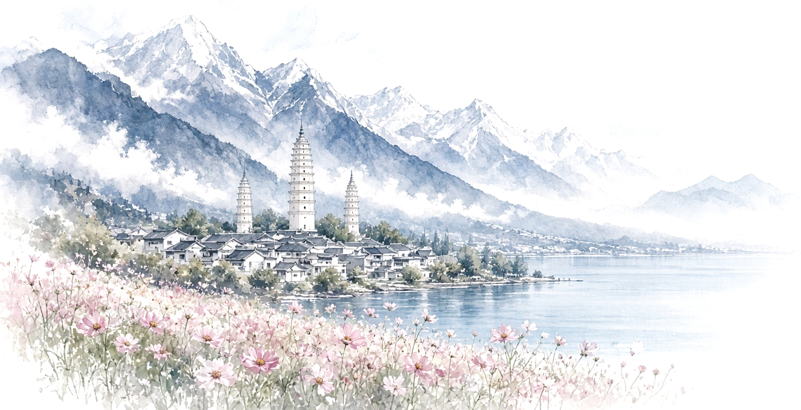
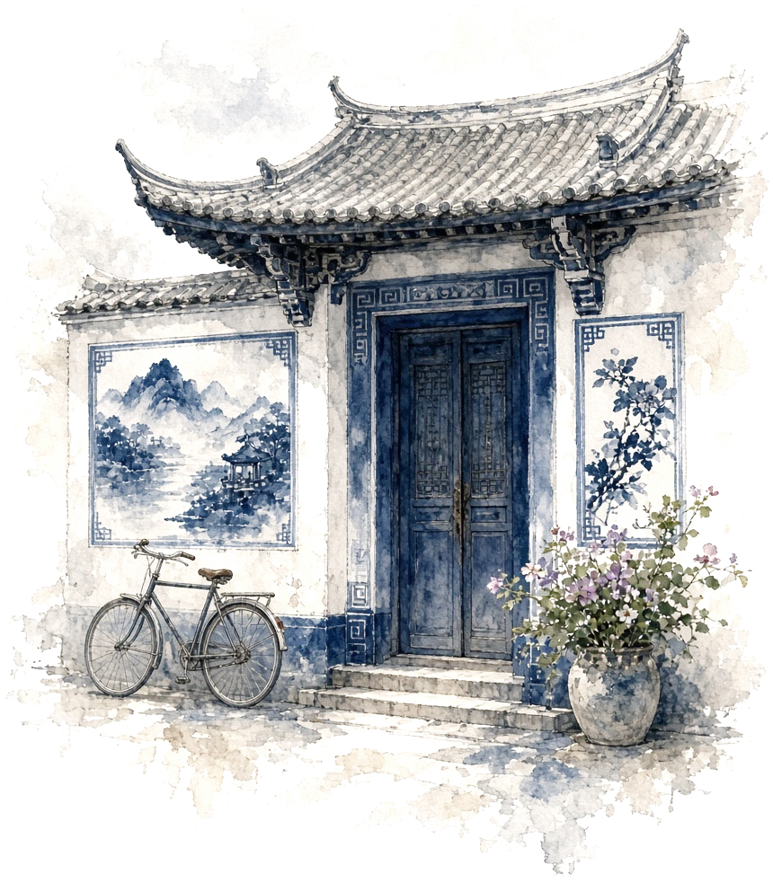

TRAVEL JOURNAL
2026
— 16 —
No. 04 · YUNNAN
DALI
Slow days under Cangshan.
25°36′N · 100°16′E
· wind off the lake
· a lamb that would not sit still
· the peak turning gold
CHINA
1.20
DALI · YUNNAN
CHINA · 2026
★
★

— 17 —
Cangshan at first light
大理
苍山 · 洱海

HIGH-SPEED RAIL · D-TRAIN
KUNMING
→
DALI
CLASS
2nd
SEAT
06F
YEAR
2026
No.
CN0426
the peak turning gold